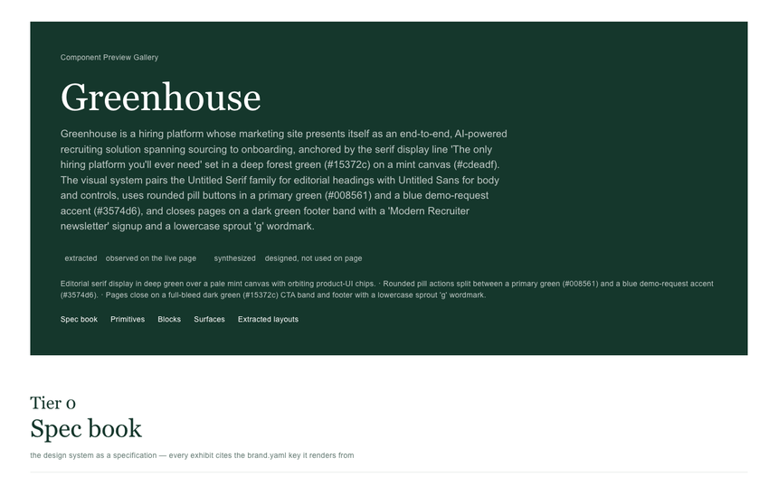
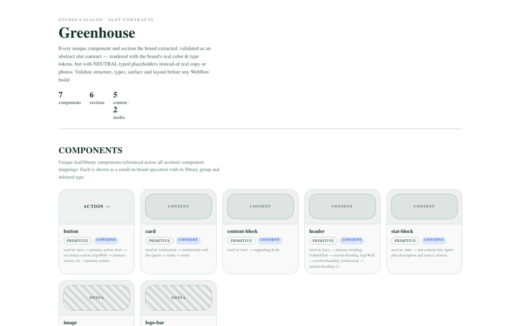
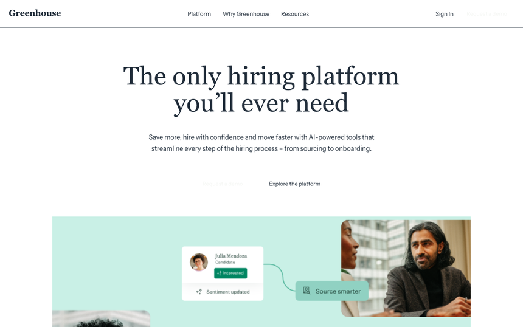

replica
Composed replica of the source page →
Rebuilt from the extracted facts alone. Fidelity score 0.8733 against the source capture; per-band scores and the punch list are in replica-report.md.
← Back to the generated siteAll published brands
Everything below was generated from screenshots and DOM/CSS measurements of the source site. No hand-written page code: the design system is extracted into facts, and the pages are composed back out of those facts, so the pages double as a check on the facts.
This run did not pass its own quality gates. The artifacts below are its current best output, published for browsing and review — not a certified-good build.
Rebuilt from the extracted facts alone. Fidelity score 0.8733 against the source capture; per-band scores and the punch list are in replica-report.md.

Primitives, surfaces, blocks and every measured layout pattern rendered from the design system. Each pattern is also a standalone page under harness/layouts/.


The framework lane: a real React + Tailwind app generated from the same facts, built to one self-contained HTML file. It is this bundle's front page. Source stays in the run dir (runs/greenhouse-4/brand/framework/single/framework-claude).
These files are the deliverable; every rendered page above is derived from them.
| file | what it is | size |
|---|---|---|
brand.yaml | Authored brand facts: tokens, surfaces, components, section patterns. | 106.6 KB |
brand.md | The same design system as a readable document. | 25.7 KB |
layout-library.yaml | Measured layout patterns (one entry per composable section shape). | 23.0 KB |
section-copy.yaml | Verbatim copy captured per section. | 12.1 KB |
media-assets.yaml | Media registry: every asset with role, geometry and section binding. | 73.0 KB |
brand-chrome.yaml | Measured nav/footer facts (links are captured, never invented). | 6.9 KB |
style-scale.yaml | Normalised type/space scales. | 4.4 KB |
voice-facts.yaml | Voice evidence extracted from the source copy. | 2.9 KB |
voice.md | Voice guidance derived from those facts. | 2.8 KB |
assets-manifest.json | Curated asset manifest (source URL → local file, with tags). | 22.9 KB |
media-guidance.yaml | Art-direction guidance for generated media slots. | 673 B |
asset-placements.json | Measured on-page placements for each asset. | 78.2 KB |
| file | size |
|---|---|
changes.md | 21.3 KB |
manifest.json | 1.8 KB |
author.log | 429 B |
catalog-build.log | 160 B |
extract-evidence.log | 8.6 KB |
extract-ground.log | 3.4 KB |
flow-g3g4.log | 1.3 KB |
framework-build.log | 385 B |
framework-vite.log | 483 B |
harness-build.log | 400 B |
replica-build.log | 837 B |
replica-home-only.log | 660 B |
validate-final.log | 12.6 KB |
validate-post-fix.log | 4.4 KB |
validate-post-fix2.log | 3.1 KB |
validate-post-fix3.log | 2.8 KB |
validate-pre-fix.log | 7.4 KB |
{kind=link}